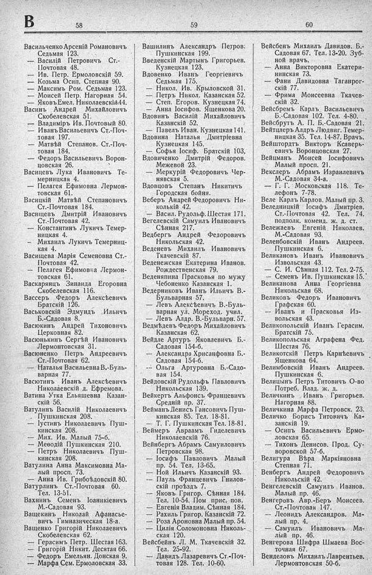

Лист источника 370
Скан

Распознанный текст
В
58
Васильченко Арсеній Романовичъ
Седьмая 123.
— Василій Петровичъ Ст.-
Почтовая 48.
— Ив. Петр. Ермоловскій 59.
— Козьма Осип. Степная 90.
— Максимъ Ром. Седьмая 123.
— Моисей Петр. Нагорная 54.
— Яковъ Емел. Николаевскій 44.
Васинъ Андрей Михайловичъ
Скобелевская 51.
— Владиміръ Ив. Почтовый 80.
— Иванъ Васильевичъ Ст.-Поч-
товая 197.
— Матвѣй Степанов. Ст.-Поч-
товая 184.
— Федоръ Васильевичъ Ворон-
цовская 26.
Васицевъ Лука Ивановичъ Те-
мерницкая 4.
— Пелагея Ефимовна Лермон-
товская 61.
Васицкій Матвѣй Степановичъ
Ст.-Почтовая 184.
Васищевъ Дмитрій Ивановичъ
Ст.-Почтовая 42.
— Константинъ Лукичъ Темер-
ницкая 4.
— Михаилъ Лукичъ Темерниц-
кая 4.
Васищева Марія Семеновна Ст.-
Почтовая 42.
— Пелагея Ефимовна Лермон-
товская 61.
Васкарянцъ Зинаида Егоровна
Скобелевская 116.
Вассеръ Федоръ Алексѣевичъ
Братскій 126.
Васьковскій Эдмундъ Ильичъ
Б.-Садовая 8.
Васюкинъ Андрей Тихоновичъ
Церковная 82.
Васюнькинъ Сергѣй Ивановичъ
Лермонтовская 31.
Васюненко Петръ Андреевичъ
Ст.-Почтовая 62.
— Наталья Васильевна В.-Буль-
варная 77.
Васютинъ Иванъ Алексѣевичъ
Николаевскій д. Ефремова.
Ватина Утка Ельяшевна Казан-
скій 56.
Ватулинъ Василій Николаевичъ
Пушкинская 208.
— Іустинъ Николаевичъ Пуш-
кинская 208.
— Мих. Ив. Малый 75-б.
— Меѳодій Пушкинская 210.
— Петръ Николаевичъ Пуш-
кинская 208.
Ватулина Анна Максимовна Ма-
лый просп. 73.
— Анна Ив. Грибоѣдовскій 80.
Ватурлинъ Ст.-Почтовая 60.
Тел. 13-51.
Вахнинъ Семенъ Іоаникіевичъ
М.-Садовая 93.
Ващекинъ Николай Афанасье-
вичъ Гимназическая 18-а.
Ващенко Григорій Николаевичъ
Скобелевская 62.
— Герасимъ Петр. Шестая 163.
— Григорій Никит. Десятая 66.
— Федоръ Емельян. Донская 9.
— Марфа Сем. Ермоловская 33.
59
Вашилинъ Александръ Петров.
Пушкинская 199.
Введенскій Мартынъ Григорьев.
Кузнецкая 123.
Вдовенко Иванъ Георгіевичъ
Седьмая 175.
— Никол. Ив. Крыловской 31.
— Петръ Никол. Казанская 52.
— Степ. Егоров. Кузнецкая 74.
— Анна Іосифов. Ященкова 20.
Вдовинъ Василій Михайловичъ
Казанскій 52.
— Павелъ Иван. Кузнецкая 141.
Вдовина Наталья Дмитріевна
Кузнецкая 145.
— Софья Іосиф. Братскій 103,
Вдовиченко Дмитрій Федоров.
Межевой 23.
— Меркурій Федоровичъ Чер-
нявская 5.
Вдовцовъ Степанъ Никитичъ
Городская бойня.
Веберъ Андрей Федоровичъ Ни-
колькій 42.
— Васил. Рудольф. Шестая 171.
Вегелевскій Самуилъ Ивановичъ
Сѣнная 217.
Ведбергъ Андрей Федоровичъ
Никольская 42.
Веденевъ Михаилъ Ивановичъ
Ткачевскій 87.
Веденежская Екатерина Иванов.
Рождественская 79.
Веденяпина Прасковья по мужу
Чебоненко Казанская 1.
Ведерниковъ Иванъ Ильичъ В.-
Бульварная 57.
— Левъ Алексѣевичъ В.-Буль-
варная ул. Мореход. учил.
— Левъ Алдр. В.-Бульварн. 57.
Ведмѣдевъ Федоръ Михайловичъ
Казанская 62.
Вейдле Артуръ Яковлевичъ Б.-
Садовая 154-б.
— Александра Хрисанфовна Б.-
Садовая 154-б.
— Ольга Артуровна Б.-Садо-
вая 154.
Вейдовскій Рудольфъ Павловичъ
Никольская 139.
Вейкертъ Альфонсъ Францевичъ
Средній пр. 37.
Вейманъ Денисъ Гансовичъ Пуш-
кинская 85. Тел. 18-81.
— Т. Г. Пушкинская Тел. 18-81.
Веймеръ Авраамъ Гиделевичъ
Николаевскій 76.
Вейнбергъ Абрамъ Самуиловичъ
Петровская 98.
— Іосифъ Павловичъ Малый
пр. 54. Тел. 13-65.
— Ной Ильичъ Казанскій 93.
— Пауль Францевичъ Гнилов-
скій проѣздъ 7.
— Яковъ Григор. Сѣнная 184.
Тел. 10-54. Пом прис. пов.
— Евгенія Владим. Сѣнная 184.
— Рахиль Григор. Казанскій 72.
— Роза Ароновна Малый пр. 54.
— Цилія Соломоновна Николь-
ская 120.
Вейсбейнъ Л. М. Ткачевскій 32.
Тел. 25-92.
— Давидъ Лазаревичъ Ст.-Поч-
товая 128. Тел. 10-60.
60
Вейсбенъ Михаилъ Давидов. Б.-
Садовая 67. Тел. 13-20. Зуб-
ной врачъ.
— Анна Викторовна Екатери-
нинская 73.
— Фани Давидовна Таганрог-
скій 77.
— Фрима Моисеевна Ткачев-
скій 32.
Вейсбремъ Карлъ Васильевичъ
Б.-Садовая 102. Тел. 4-80.
Вейсбрутъ А. П. Б.-Садовая 21.
Вейтцлеръ Алдръ Людвиг. Темер-
ницкая 35. Тел. 14-87. Врачъ.
Вейштордтъ Викторъ Ксаверь-
евичъ Воронцовская 27.
Вейцманъ Моисей Іосифовичъ
Малый просп. 21.
Векслеръ Абрамъ Израилевичъ
М.-Садовая 34-а.
— Г. Г. Московская 118. Те-
лефонъ 7-78.
Веле Карлъ Карлов. Малый пр. 3.
Веледницкій Іосифъ Дмитріев.
Ст.-Почтовая 42. Тел. 74.
подполк. коменд. ж. д. ст.
Вележаевъ Евгеній Николаев.
М.-Садовая 93.
Веленбовскій Иванъ Андреев.
Пушкинская 6.
Великановъ Иванъ Ивановичъ
Извольская 43.
— С. И. Сѣнная 112. Тел. 2-75.
— Семенъ Ив. Пушкинская 15.
Великанова Анна Георгіевна
Никольская 68.
Великовъ Федоръ Ивановичъ
Графская 60.
— Иванъ и Прасковья Из-
вольская 43.
Великопольскій Иванъ Герасим.
Братскій 75.
Великопольская Аграфена Фед.
Шестая 76.
Великотскій Петръ Карпѣевичъ
Ященкова 64.
Велимбовскій Иванъ Андреев.
Пушкинская 6.
Велицынъ Петръ Титовичъ О-во
Потреб. Влад. ж. д.
Величкинъ Иванъ Григорьев.
Нагорная 88.
Величкина Марфа Петровск. 23.
Величко Борисъ Титовичъ Ка-
занскій 19.
— Осипъ Васильевичъ Ермо-
ловская 65.
— Тихонъ Денисов. Прод. Су-
воровской 57-б.
Велигура Вѣра Маркіяновна
Степная 71.
Венбергъ Андрей Федоровичъ
Никольскій 42.
Венгелевскій Самуилъ Иванов.
Малый пр. 46.
Венгеровъ Авр.-Беръ Моисеев.
Ст.-Почтовая 147.
— Леонидъ Александров. Ма-
лый пр. 4.
— Самуилъ Ивановичъ Ма-
лый пр. 46.
Венгерова Шифра Шмаева Вос-
точная 67.
Венделовъ Михаилъ Лаврентьев.
Лермонтовская 50-б.